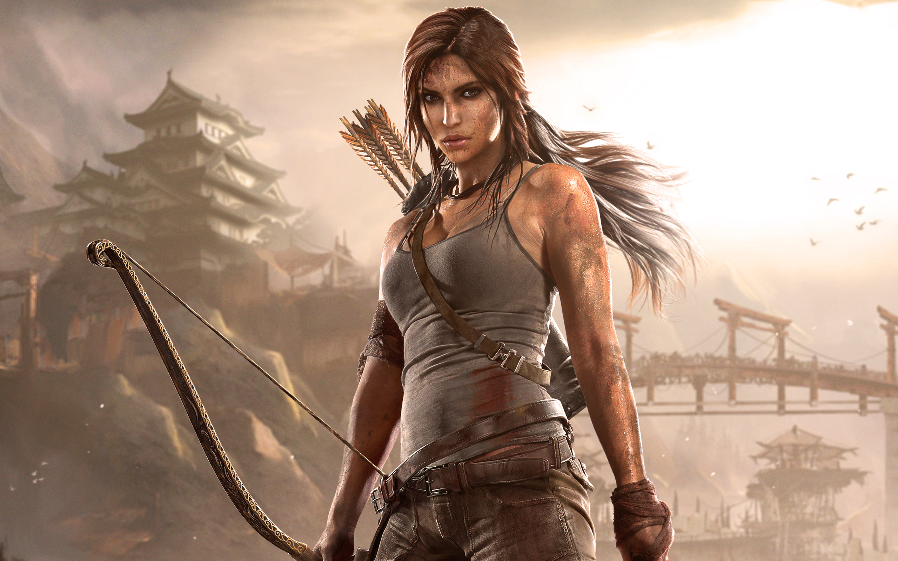
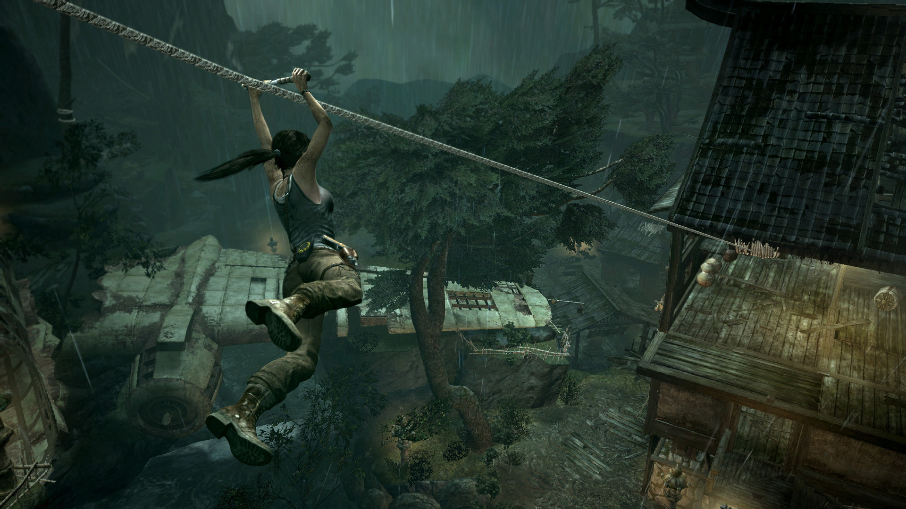
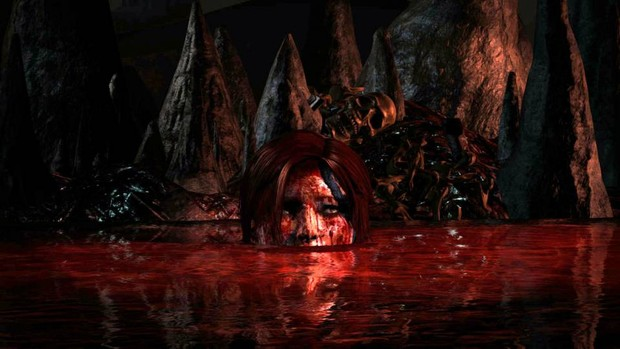
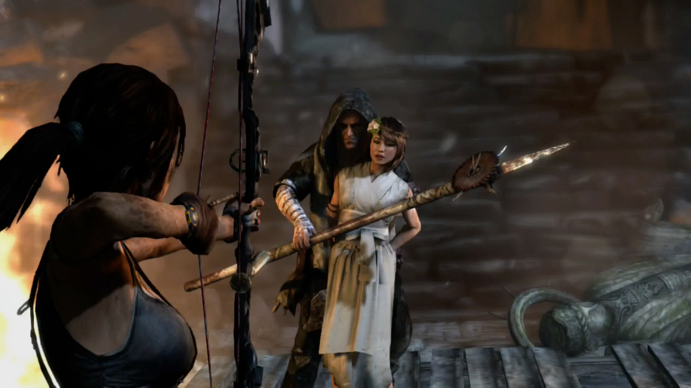

Sjedi 1! - Recenzije PC igara
Nemamo vremena za igranje igara i nismo kompetentne za ocjenjivanje... ali ćemo svejedno to uraditi!
Tomb Raider
Tomb Raider je dugo iščekivani deseti nastavak popularnog naslova. Glavni protagonist je, kao i svaki put, Lara Croft. Iako, ovog puta radnja se ne nastavlja na prethodni Underworld, nego se radi o samom 'nastanku' Lare Croft. Budući da nove naslove pratim od 2000 godine, počevši sa Tomb Radier II, zaista sam jedva čekala da bude dostupna i kod nas. Na sreću, moj laptop je bio dovoljan jak za neometano igranje i na najboljim grafičkim postavkama. Ipak, animacije su grafički dosta savršenije od same igre.

Prvi dojam je fantastičan! Priča počinje drugog dana brodske ekspedicije, u južnoj Japanu. U potrazi su za izgubljenim kraljevstvom i legeni o kraljici Himiko. Usred oluje dolazi do brodoloma koji Lara nekom srećom preživi bez većih ozlijeda. Budi se u nekoj totalnoj jezivoj,vlažnoj prostoriji okačena o strop,i oslobađajući se padne na metalnu šipku. Stvari odatle ne postaju bolje! Rješavajući zagonetke izbavlja se odatle. Osim zagonetki, jako su bitni i refleksi. Sama radnja smještena je na otoku Yamatai. Jedna od novosti je navigacija i instinkt za preživljavanje- omogućava Lari da analizira svoju okolinu i zlatnom bojom izdvoji koristine predmete.
Prvi dio usredotočen je uglavnom na preživljavanje, privikavanje na upravljanje likom i prikupljanje najprije radio komunikatora pa oružja i municije. Iz njene kamere saznajemo ko su ostali članovi ekspedicije, Alex, Roth, Sam, Withman, Reyes i Grimm. Mapa ostrva je odlično urađena. Kasnije je moguće i brzo putovanje između logora koji se nalaze po otoku. U pokušaju da pronađe ostatak ekipe, Lara otkriva da oni definitivno nisu jedini na tom otoku.
Da li Lara nalazi svoje prijatelje? Ko preživi a ko ne? Svaka dalja rečenica bi pokvarila doživljaj, zato samo mogu preporučiti da igrate
Godina izdavanja: 2013
Minimalni sistemski zahtjevi:
- Dual core CPU (AMD Athlon64 X2 2.1 Ghz (4050+) ili Intel Core2 Duo 1.86 Ghz (E6300)
- 1 GB RAM-a za XP ili 2 GB rama za WIN7
- Win XP,7,8
- DirectX 9
- 512 MB video RAM-a
- 7GB prostora
Ocjena: